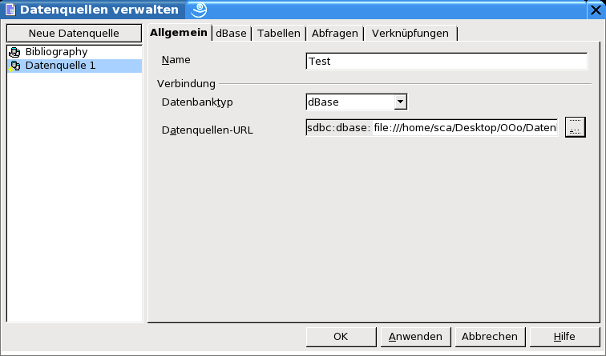
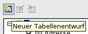
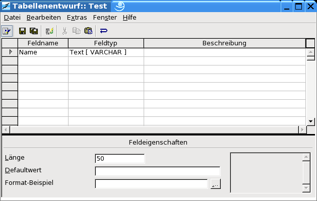
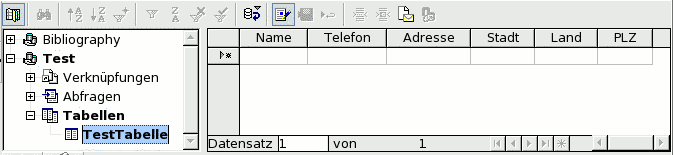

| [zurück] | [Hauptmenü] | [weiter] |
| [PDF] [SXW] |
Die Datenquelle anlegen
Dieser Abschnitt wird Sie durch das Anlegen einer Datenquelle mit OpenOffice.org führen. Um plattformunabhängig zu sein, wird eine dBase – Datenbank erzeugt.
Wählen Sie das Menü Extras – Datenquellen.
Klicken Sie auf „Neue Datenquelle“.
Geben Sie einen Namen für die Datenquelle ein. Hinweis: Wir werden hier TEST als Namen verwenden.
Drücken Sie die Tabulatortaste.
Wählen Sie dBase als Datenbanktyp. Hinweis: Wir benutzen dBase, da wir dadurch vollen Zugriff auf eine lokale Datenbank erhalten.
Drücken Sie die Tabulatortaste.

Abbildung 1: eine neue DatenquelleGeben Sie ein Verzeichnis an, in dem die Datenbankdateien abgelegt werden sollen. Geben Sie ein Verzeichnis an, welches noch nicht existiert. Das Programm wird es automatisch erzeugen.
Klicken Sie „Anwenden“.
Tabellen zu einer Datenquelle hinzufügen
In diesem Abschnitt werden wir üben, wie Tabellen zu einer Datenquelle hinzugefügt werden können. Dieser Schritt setzt voraus, dass Ihre Datenquelle vollen Zugriff auf die Datenbank erlaubt. JDBC und ODBC können benutzt werden, wenn Sie ein Datenbankmanagementsystem wie z.B. MySQL, PostgreSQL oder Oracle installiert haben.
Klicken Sie auf die Karteikarte „Tabellen“.
Klicken Sie auf das Symbol „Neuer Tabellenentwurf“ 

Abbildung 2: Dialog "Tabellen Entwurf"der Dialog „Tabellen Entwurf“ wird angezeigt
Tippen Sie Name ein.
Drücken Sie dreimal die Tabulatortaste.
Geben Sie Telefon ein.
Drücken Sie dreimal die Tabulatortaste.
Geben Sie Adresse ein.
Drücken Sie dreimal die Tabulatortaste.
Geben Sie Stadt ein.
Drücken Sie dreimal die Tabulatortaste.
Geben Sie Land ein.
Drücken Sie dreimal die Tabulatortaste.
Geben Sie PLZ ein.
Klicken Sie im Menü auf Datei.
Wählen Sie „Speichern“.
Wählen Sie einen Namen für Ihre Tabelle. Hinweis: Wir benutzen in diesem Text TestTabelle.
Schließen Sie den Dialog „Tabellen Entwurf“.
Schließen Sie den Dialog „Datenquellen verwalten“.
Daten einer Datenquelle bearbeiten
Dieser Abschnitt beschreibt, wie Sie OpenOffice.org benutzen können, um Daten einzugeben, zu ändern und zu löschen.
Datensätze hinzufügen
Drücken Sie <F4>.

Abbildung 3: Fenster DatenquellenansichtDie Datenquellenansicht wird eingeblendet.
Doppelklicken Sie auf die Datenquelle „TEST“.
Doppelklicken Sie auf „Tabellen“.
Klicken Sie auf „TestTabelle“.
Falls noch kein Datensatz vorhanden ist, wird automatisch ein neuer Datensatz angelegt, sobald Sie etwas eingeben. Anderenfalls drücken Sie den Button .
Geben Sie folgende Daten ein, drücken Sie dabei die Tabulatortaste um in das nächste Feld zu springen.
|
Max Müller |
0815-123 |
13b Musterstrasse |
Nirgendwo |
D |
12345 |
|
Frieda Meier |
012-4711 |
Hierstrasse 1 |
Dortdorf |
D |
98765 |
Datensätze bearbeiten
Klicken Sie in das Telefonfeld von Max Müller.
Geben Sie 888-888-8888 ein.
Drücken Sie die Taste <Pfeil nach Unten>. Hinweis: Sobald Sie sich zu einem anderen Datensatz bewegen, werden Ihre Änderungen gespeichert.
Datensätze löschen
Klicken Sie auf den Zeilenkopf vor „Frieda Müller“. Durch oder wird der gesamte Datensatz ausgewählt.
Rechtsklicken Sie auf den Zeilenkopf.
Wählen Sie „Zeilen löschen“ und bestätigen Sie die Sicherheitsabfrage.
|
|
Nachdem Sie jetzt einige einfache Dinge gesehen haben, die Sie mit OpenOffice.org und Datenquellen tun können, möchte ich noch Folgendes empfehlen:
Hinweis: Sie werden nichts zerstören, wenn Sie etwas mit der Datenquelle herumspielen, die Sie soeben erzeugt haben. |
|---|
Credits
Autor : Scott Carr
Integration : Gianluca Turconi
deutsche Übersetzung: André Schnabel
letzte Änderung (Original): 02. März 2002
letzte Änderung (Übersetzung): 20.07.03
Kontakt : OpenOffice.org Documentation Project documentation.openoffice.org
OpenOffice.org deutschsprachig de.openoffice.org